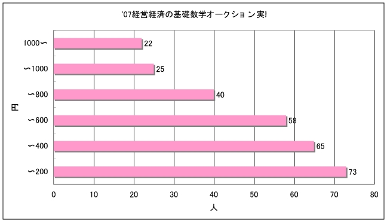

'07年度実施 経済学実験（ファースト・プライス オークション）
富山大学経済学部 経営経済の基礎数学Ｉ（Sクラス）において、以下の実験を行いました。
実験１ ファースト・プライス オークション
ルール
最高の入札金額を提示したものが、入札金額を払って商品を受け取る。
例
| 入札者 |
入札金額 |
| Ａ |
600円 |
| Ｂ |
1,200円 |
| Ｃ |
1,100円 |
| Ｄ |
1,150円 |
| Ｅ |
980円 |
Ｂが落札。支払金額は 1,200円
出品
『全国自治宝くじ第519回ゴールデンウイークトリプルマッチ ５枚（￥２００×５）』
（１等20,000円 100本））
実験結果
| 入札金額 |
人数 |
積算 |
| 0円〜200円 |
8 |
73 |
| 〜400円 |
7 |
65 |
| 〜600円 |
18 |
58 |
| 〜800円 |
15 |
40 |
| 〜1000円 |
3 |
25 |
| 1000円〜 |
22 |
22 |

表計算集計ファイル
参考
- ハル・Ｒ・ヴァリアン『入門ミクロ経済学 [原著 第５版]』第１５章「市場需要」第１７章「オークション」第３５章「公共財」勁草書房, 2000
- 梶井・松井『ミクロ経済学 戦略的アプローチ』第６章「オークション」第７章「公共財」日本評論社, 2000
- 荒井一博『終身雇用と日本文化 ゲーム論的アプローチ』中公新書, 1997
- 西條辰義『制度設計と実験』（日本経済新聞連載「やさしい経済学」,2002年8月）
- 西條辰義『実験経済学「航空券売買実験」で均衡価格を確かめる』週間ダイヤモンド, 1997/04/19号
作成：白石俊輔
'07/04/27 UP
'07/04/27 更新